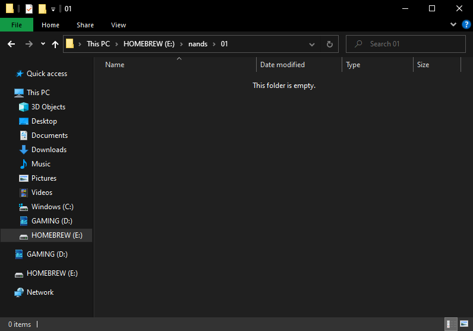

Dumping NAND to Emulated NAND (emuNAND)
Emulated NAND is just what you'd expect it to be: emulated NAND that
can be used instead of your actual NAND. In this guide, you'll be
dumping your actual NAND to be used as emuNAND.
Before dumping, it is highly recommended that you create a backup of
your NAND using BootMii.
What you need
- USB Loader GX
- An SD card or a USB drive with at least 520 MB
This guide will use the default paths set in USB Loader GX. You can
edit the paths mentioned to your preference in the Custom Paths option
found in the global settings of USB Loader GX.
Instructions
Section I - Preparing the SD Card
-
Create a folder on the root of your SD card named
nandsand then create a folder in thenandsnamed01. At this point, your SD card should look something similar to the image below.

- Eject your SD card, insert it into your Wii and launch USB Loader GX.
Section II - Dumping the NAND to the emuNAND
- Select the gears icon near the bottom left corner of the screen to open Global Settings. Then select the option titled “Features”.
- Scroll down the page and select the option titled “Dump NAND to EmuNAND.” Select “Everything.”
You have now successfully dumped your NAND to your emuNAND. You can now use your emuNAND to store and install things just like you would your actual NAND.